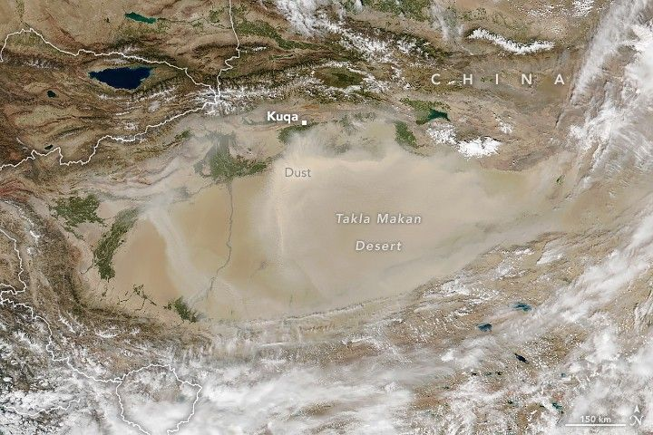

Dust in the “Eye” of the Tarim Basin
Spring and summer are peak seasons for dust in western China’s Tarim Basin, but skies grow hazy in this barren expanse of desert at other times of the year as well. Satellite observations and ground-based monitoring data show that skies are also routinely dusty in the fall.
This satellite image shows dust sweeping across the eye-shaped basin. The image was acquired by the VIIRS (Visible Infrared Imaging Radiometer Suite) on the NOAA-20 satellite on September 1, 2025. When the image was acquired, winds transported dust westward across the basin, while mountain ranges to the north and west blocked its passage.
In the northern “eyebrow” part of the basin, long east–west trending ridges are visible, though partially obscured by dust. Part of the Kuqa fold-and-thrust belt, the colorful structures are the product of tectonic activity that pushed parts of the Tarim into and beneath the mountain ranges to the north, creating intense pressure.
These compressional forces caused layers of horizontally deposited sedimentary rock to buckle and fold into wave-shaped anticlines and synclines. Ongoing erosion of the parallel ridges has revealed colorful rock layers that contrast sharply with the surrounding landscape. Detailed Landsat images of this area show that many of the ridges consist of red and green sandstones and cream-colored limestones.
Scientists analyzed more than three decades of satellite observations and reported that the basin saw an average of 60 dust days per year, including seven in September. The researchers characterized about 85 percent of the dust days as dominated by “floating dust”, meaning visibility was less than 10 kilometers (6 miles) and winds were light. The rest were classified as either “blowing dust” days with visibility less than 5 kilometers and moderate winds, or “dust storm” days with visibility less than 1 kilometer and strong winds.
In another analysis, researchers found that the MISR (Multi-angle Imaging SpectroRadiometer) on NASA’s Terra satellite detects larger dust particles in spring, fall, and winter than in summer. This likely happens, the authors noted, because hotter temperatures during the summer fuel more localized convection that lifts fine dust via dust whirls (also called dust devils). During the other seasons, it’s more common for strong horizontal winds blowing across the landscape to lift larger dust particles into the air.